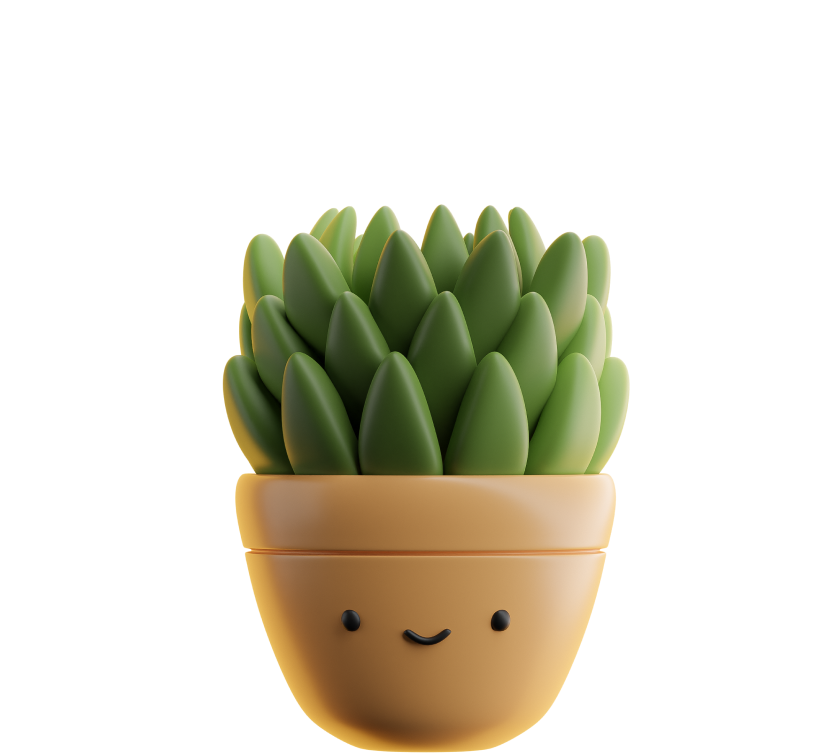

<mat-card class="quiz-container">
    <!-- Título -->
    <h1 class="quiz-title">Find the ideal plant</h1>

    <!-- Carregador de espera -->
    <div *ngIf="loading" class="loading-spinner">
        <mat-spinner></mat-spinner> <!-- Este é o spinner do Angular Material -->
        <br>
        <p>Loading questions...</p>
    </div>

    <!-- Conteúdo do Quiz -->
    <div *ngIf="!loading">
        <!-- Pergunta com mascote e balão de fala personalizado -->
        <div class="question-container">
            <div class="mascote-container">
                
            </div>
            <div class="question-bubble-container">
                <div class="question-bubble">
                    <p>{{ currentQuestion?.label }}</p>
                </div>
            </div>
        </div>

        <!-- Opções como botões -->
        <div class="options-container">
            <button
                *ngFor="let option of currentQuestion?.options"
                mat-raised-button
                color="primary"
                (click)="selectOption(option)"
                [class.selected]="selectedAnswers[currentQuestion?.key] === option"
            >
                {{ option }}
            </button>
        </div>

        <!-- Barra de progresso e botão SEGUINTE -->
        <div class="quiz-footer">
            <mat-progress-bar
                [value]="progress"
                mode="determinate"
            ></mat-progress-bar>
            <div class="footer-controls">
                <span>{{ currentIndex + 1 }}/{{ questions.length }}</span>
                <button
                    mat-flat-button
                    color="primary"
                    (click)="nextQuestion()"
                    [disabled]="!selectedAnswers[currentQuestion?.key]"
                >
                    {{ currentIndex + 1 === questions.length ? 'Submit' : 'Next' }}
                </button>
            </div>
        </div>
    </div>
</mat-card>
